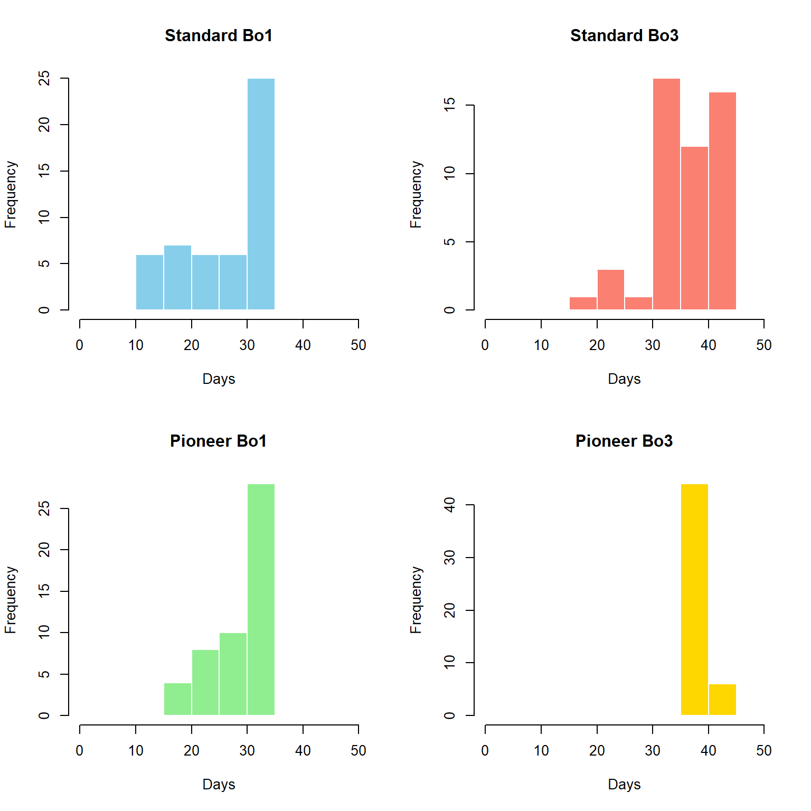
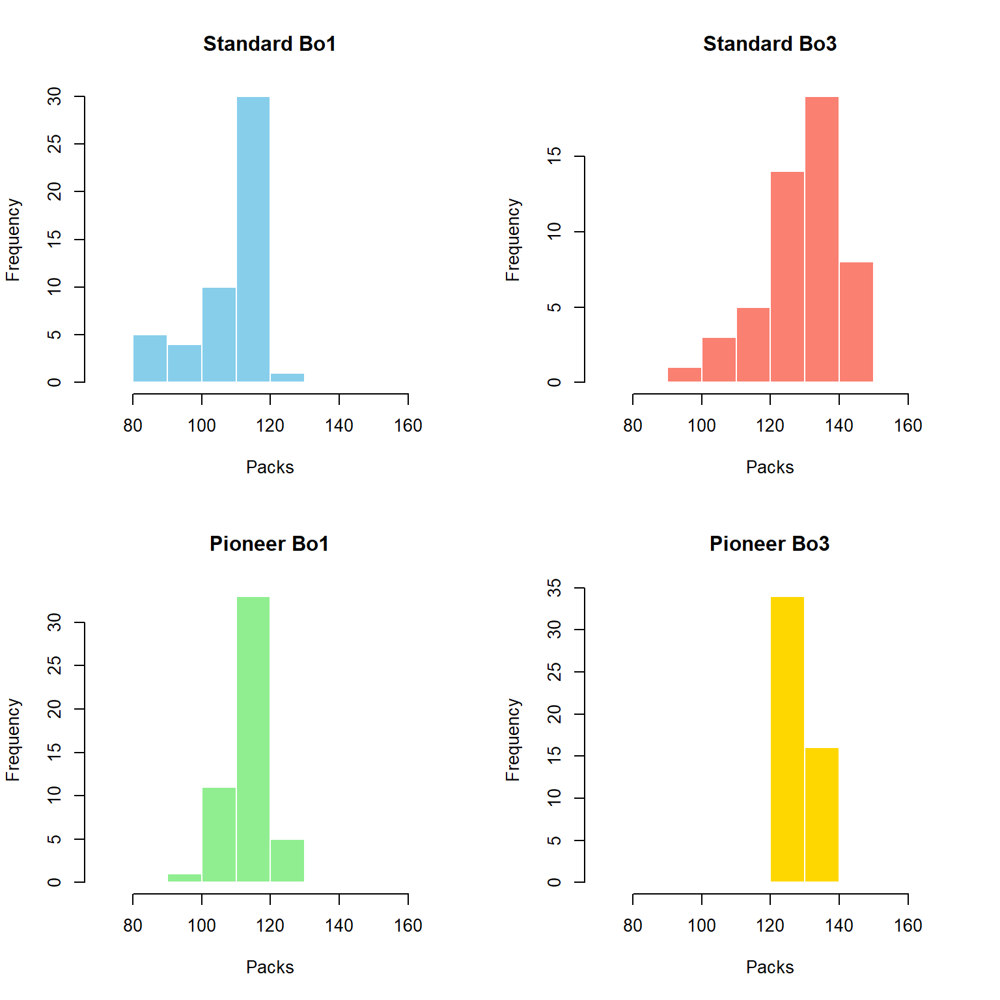
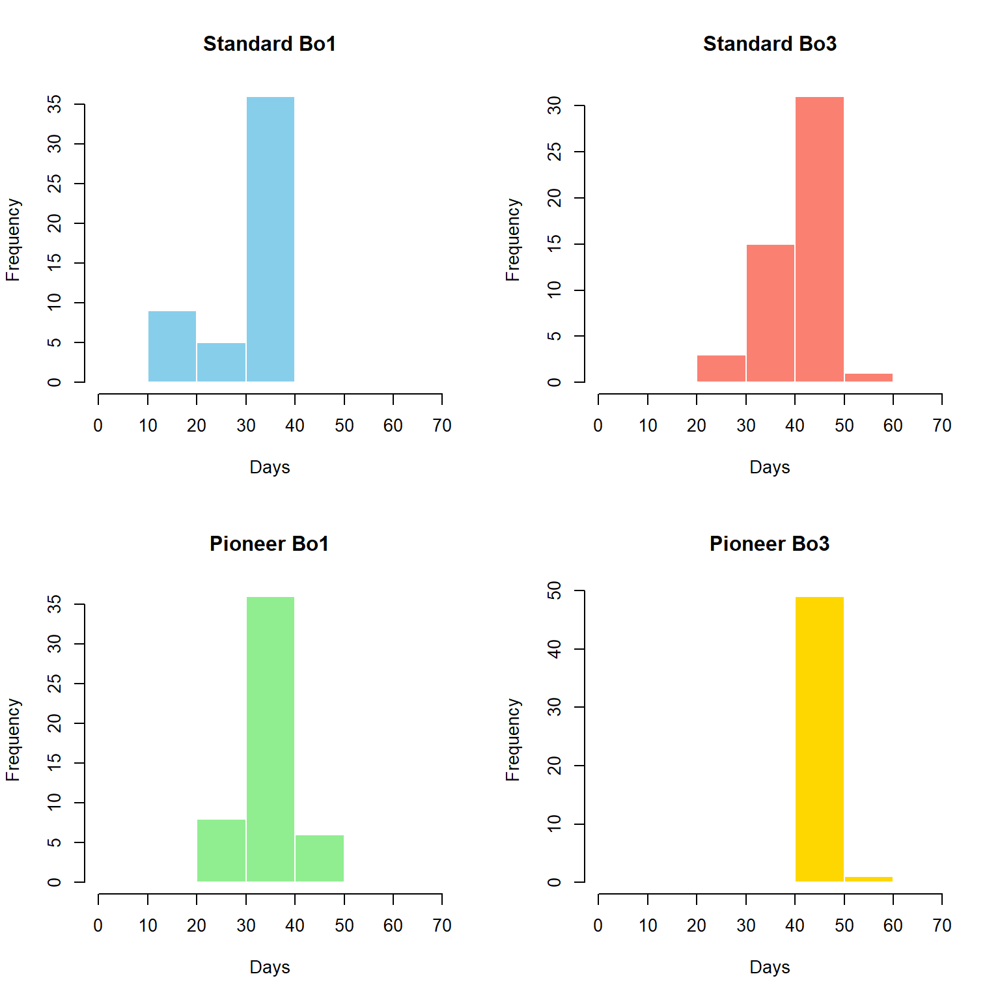
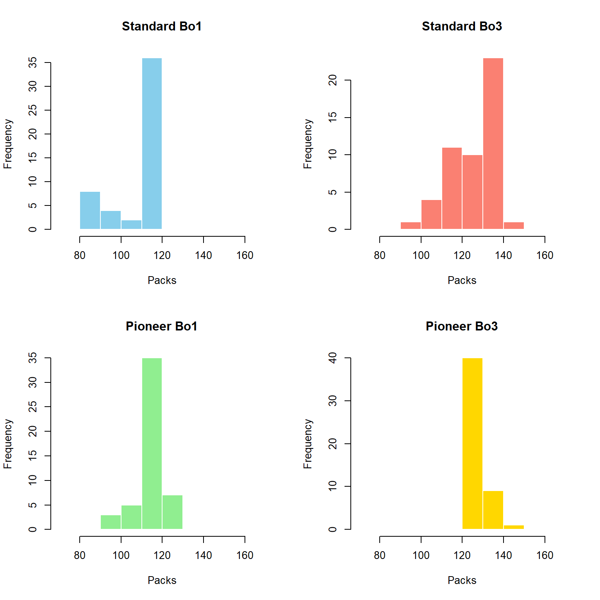
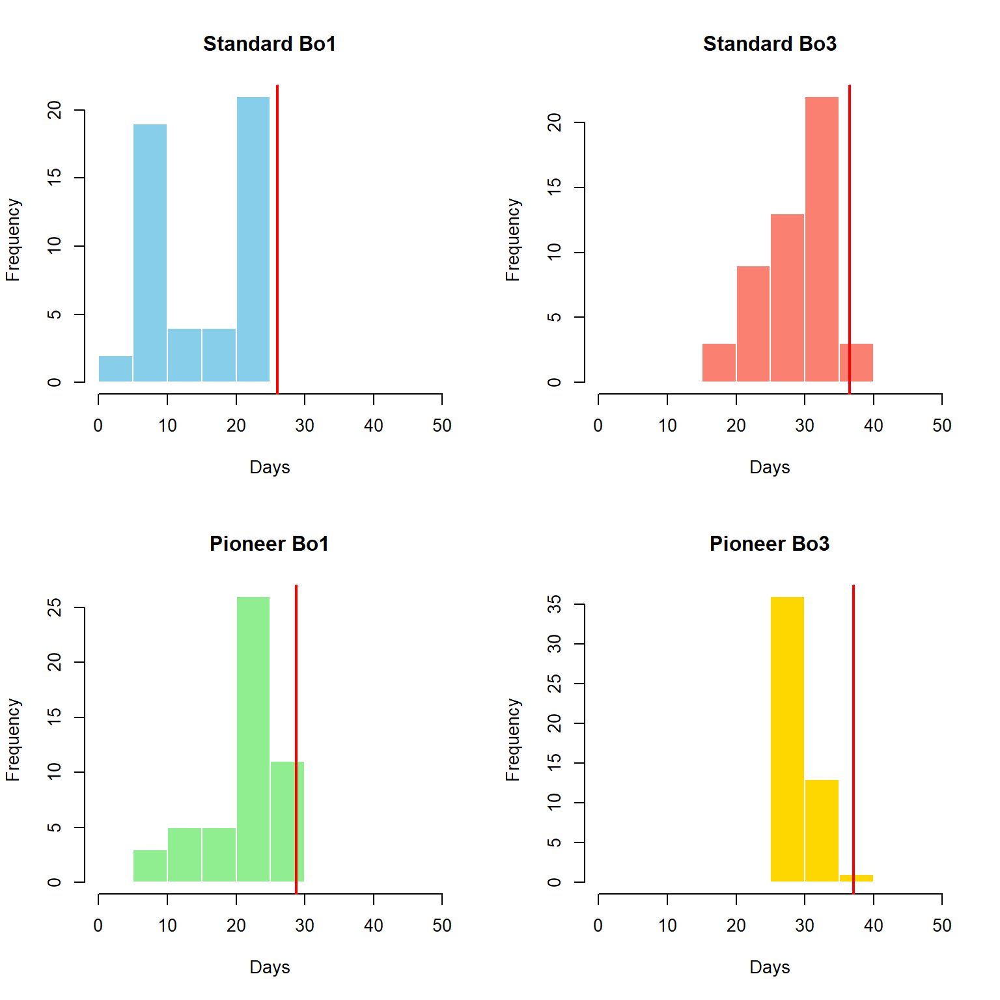
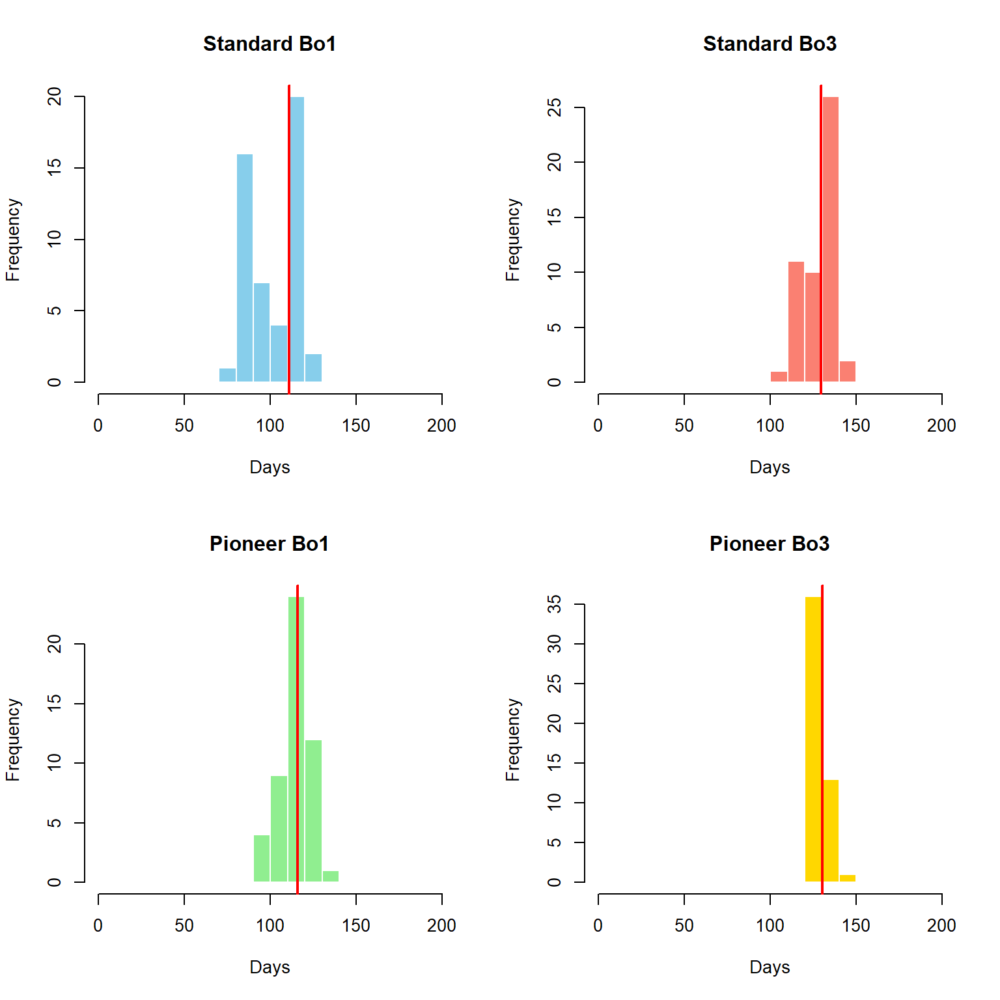
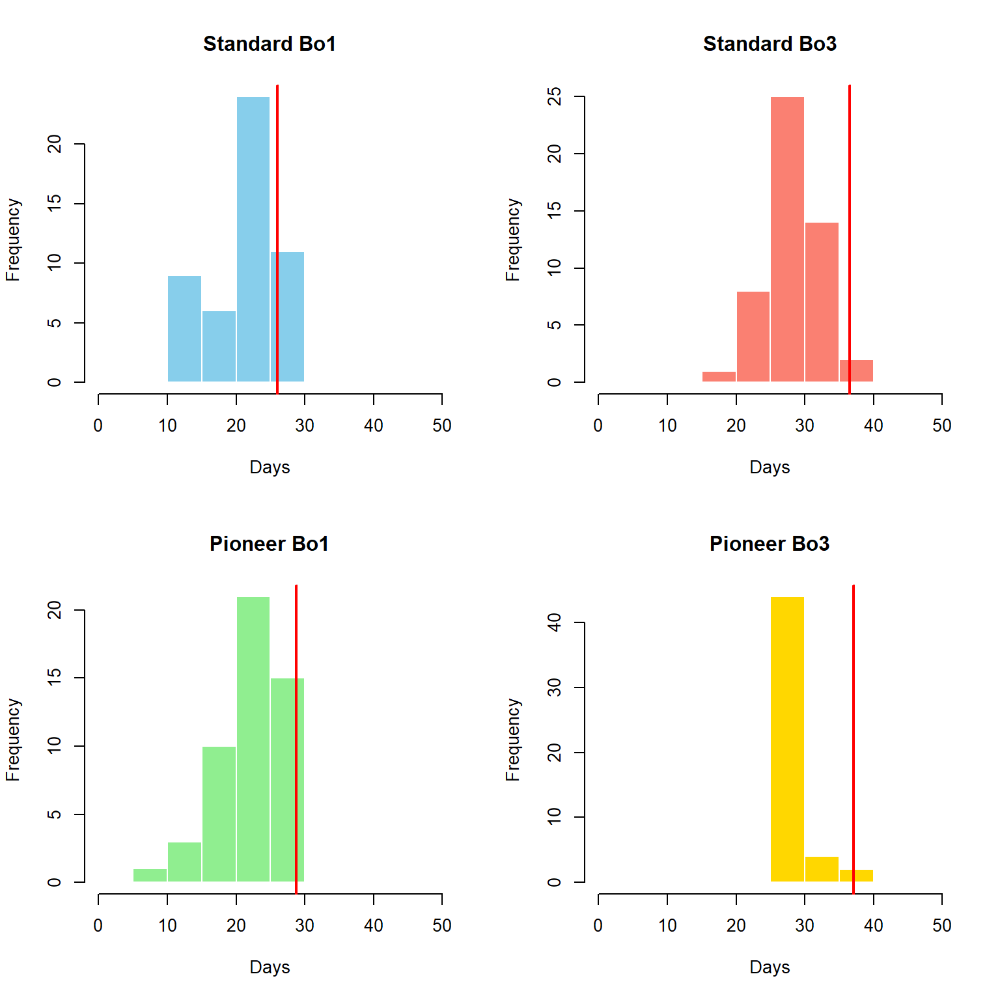

How Should You Spend Your Gold (and Money) on MTG Arena?
An MTG Arena Monte Carlo Analysis
Introduction
The purpose of this project is utilize monte carlo simulations of opening Magic the Gathering packs to determine: 1) the best methodology for earning cards, and 2) the effectiveness of spending money.1
Traditionally, MTG is played in paper where cards are opened in physical packs and are purchased with real world money; however, competitive decks often cost hundred if not thousands of dollars. MTG can also be played online through different clients, such as Magic the Gathering Online (which has its own digital economy that mirrors the physical card game in most ways) and Magic the Gathering Arena (which follows a more traditional video game progression structure where gold can be earned through playing games and completing quests to then open packs of cards). Of the two online platforms, Magic the Gathering Arena is much friendlier for a smaller (or even free) budget so it will be the primary focus of these simulations.
Methodology
Player Profiles
The simulation consisted of a total of 1200 players that were sorted into 24 different profiles for 50 players each. The 24 profiles consisted of all possible combinations across the 4 following attributes:
Format
Standard: Card pool of legal cards is smaller and consist of approximately the last 3 years worth of sets
Pioneer: Card pool of legal cards is larger and consist of all regular core sets and expansions since Return to Ravnica (released in 2012)
Best of:
Best of 1: Decks typically consist of only a 60 card main board
Best of 3: Decks typically consist of a 60 card main board plus a 15 card sideboard for a total of 75 cards per deck
Pack type:
Normal pack: Typical rewards structure of magic the gathering packs of 8 cards from a specific set where 5 are commons, 2 are uncommon, and 1 is rare but could be upgraded to a mythic
Mythic pack: A more expensive pack that follows the same rewards structure as the normal pack for commons and uncommons, but the final card is guaranteed to be a mythic
Budget:
Free to play: No money is spent (default starting conditions)
$5: The “Welcome Bundle” is purchased which adds 2500 gems (the premium currency) and 5 Foundations packs to the starting conditions
$15: The “Adventurer Bundle” is purchased which adds 3500 gems to the starting conditions
Initial Conditions
When each player was instantiated they started with 2000 gold, a basic set of cards that is universal, and the 63 free packs that are given to all players. Since the rewards from the 63 packs are randomly selected, this meant that each player started with a unique position as far as cards, but the same position as far as currency.
The Loop
The simulations consisted of repeatedly looping through a set of daily actions that simulate how a player would play each day. The actions are outlined below:
The player completes their daily quest, which can either be 500 gold (with a 75% chance) or 750 gold (with a 25% chance). If the daily quest is only 500 gold, they will try to reroll once for a 750 gold quest; otherwise, they will just collect the gold payout. In addition to the gold, they also receive 500 experience points regardless.
The player wins 4 games. This progresses the daily wins count by 4, which rewards 550 gold, and if the weekly wins count has not reached 15 yet, they receive an additional 250 experience points per win. Any wins beyond this have substantially diminishing returns and are an unrealistic amount of daily play for the average player.
The player then checks if the experience points that they have earned results in their mastery pass leveling up. The mastery pass is Arena’s version of a battle pass and consists of 2 tracks: the free track (which rewards a pack of the current set approximately every other level) and the paid track (which rewards small amounts of gold, gems, and various packs across sets each level).
If the player has earned enough gold or gems to make a purchase, they will determine and then open the optimal pack2 to progress on deck completion.
If the vault (a reward that pays back for opening duplicate cards) is complete, the player will open it.
The player will check if it has completed any of the decks it is working towards. If so, it will end its loop and record which deck was completed, otherwise, it will repeat the loop for the next day.
Defining Completion
Each player is given the 10 best decks in the meta game3 to work towards. In addition to earning card, player can also earn wildcards which can be crafted into any card of a given rarity, so a player was defined to have completed their simulation once at least one of the decks is fully craftable. By allowing the use of wildcards, the need to randomly get exactly the right cards was alleviated and it gave an inevitability of completion as a player could in theory just earn enough wildcards to craft an entire deck.
What si the Best Method to Earn Cards?
Normal Packs

Across all 4 profiles, the average number of days to complete a deck was 32.1 and the average number of packs was 121.55. For both standard and pioneer, Bo1 required less days and less packs to complete on average than Bo3, which makes intuitive since there are less cards for these decks.
As far as the comparison between standard and pioneer, their average number of days were similar in both Bo1 and Bo3. The standard deviation of standard was consist between Bo1 and Bo3 (approximately 6.4), while there was a noticeable difference in standard deviation between Bo1 and Bo3 for pioneer (apprxoimately 4.1 for Bo1 but only 1.6 for Bo3).
The distributions for both types of standard and pioneer Bo1 are also skewed left (this is true for both days and packs since they are a rough proxy for each other). This is the result of very fortunate pack openings that gave the exact cards that were needed for the decks. On the other hand, there is unlikely to be exceptionally high outliers due to the fact that there is the aforementioned inevitability of completion through the wild cards.
Mythic Packs


Across all 4 profiles, the average number of days to complete a deck was 38.33 and the average number of packs was 121.14. Similar to the normal packs (and following the same logic), for both standard and pioneer, Bo1 required less days and less packs to complete on average than Bo3.
When comparing between standard and pioneer, the standard deviations were more varied than in the normal pack case. The lower 2 were both pioneer with Bo3 being approximately 1.6)and Bo1 being 5), while the higher two were both standard with 6.8 for Bo3 and 8.2 for Bo1.
Unlike in the normal pack case, the pioneer Bo1 distribution looks much closer to being normally distributed; however the distributions for both standard Bo1 and Bo3 still are skewed to the left.
Which is better?
To determine which methodology is best for completing a deck, we can run a Welch’s t-test for each of the formats.
| player_type | p_value | normal_mean | mythic_mean |
|---|---|---|---|
| Bo1 Standard | 0 | 26.02 | 32.16 |
| Bo3 Standard | 0 | 36.56 | 41.76 |
| Bo1 Pioneer | 0 | 28.74 | 35.62 |
| Bo3 Pioneer | 0 | 37.08 | 43.78 |
In regards to number of days, when comparing the two types of packs, across all formats, the normal packs are better than the mythic packs as the lower number of days is statistically significant with a p-value of 0.
| player_type | p_value | normal_mean | mythic_mean |
|---|---|---|---|
| Bo1 Standard | 0.581 | 110.88 | 112.18 |
| Bo3 Standard | 0.113 | 129.28 | 125.98 |
| Bo1 Pioneer | 0.344 | 115.76 | 117.16 |
| Bo3 Pioneer | 0.061 | 130.28 | 129.24 |
However, when comparing the number of packs, there is no longer a statistically significant different between normal and mythic packs. This means that completing a deck requires roughly the same number of packs, so what becomes more important is the speed at which you can acquire packs. Therefore, the cheaper price of the normal packs (1000 gold vs 1300 gold) gives the normal packs an advantage at completing a deck faster.
Another implication of the number of needed packs being the same between normal and mythic packs is that it implies that wild cards (which are earned by opening a certain number of packs) are more important. Of the wild cards, the rare wild cards are by far the most valuable as this is the most common bottleneck when building decks (due to their high demand and low supply). The average number of rare wild cards earned by opening normal packs was 20.26 while the average number of rare wild cards earned by opening mythic packs was 20.19. These values are nearly identical, and thus further support the idea that the number of packs opened matters most.
This dependency on wild cards is also reflected in the specific decks that were completed. Mono-Red-Aggro was always the completed deck for standard and nearly always the completed deck for pioneer4. This archetype is almost always one of the cheapest decks in a format, and thus also usually the one with the lowest number of cards with high rarities. This is especially apparent in the mana-base (where many decks inflate their rare count) since they are running about 15 basic lands. This means that 20-25% of the deck is immediately complete without any further effort.
Should You Spend Money?
$5 Budget
For $5, new players can buy the welcome bundle which includes 5 Foundations packs and 2500 gems. This allows a player to immediately open an extra 17 packs which results in many cards, and more importantly, 3 immediate rare wild cards.


With a simple visual analysis, there is a clear decrease in the number of days required to complete a deck upon purchasing the Welcome Bundle, and a t-test confirms this. Once again, the number of packs appears to be unchanged for the same reasons as highlighted above.
| player_type | p_value | normal_mean | purchase_5_mean |
|---|---|---|---|
| Bo1 Standard | 0 | 26.02 | 15.48 |
| Bo3 Standard | 0 | 36.56 | 29.28 |
| Bo1 Pioneer | 0 | 28.74 | 22.14 |
| Bo3 Pioneer | 0 | 37.08 | 30.52 |
With this difference in mind, the question of if the Welcome Bundle is worth it comes down to the whether saving an average of 8 days (or about 24 % of the total time) is worth the $5.
$15 Budget
For $15, a player can also buy the Adventurer Bundle which gives 2 cosmetics plus 3500 gems. Importantly, 3500 gems gives a player enough to buy the mastery pass. Common wisdom within the community is that the master pass is one of the most cost effective purchases that a player can make, so in this simulation, it was assumed that the player would always buy the mastery pass.

Although not as striking in the graphs, the t-test once again confirms that there is a statistically significant decrease in the number of days that are required to complete a deck.
| player_type | p_value | normal_mean | purchase_15_mean |
|---|---|---|---|
| Bo1 Standard | 0.001 | 26.02 | 22.08 |
| Bo3 Standard | 0.000 | 36.56 | 29.06 |
| Bo1 Pioneer | 0.000 | 28.74 | 22.92 |
| Bo3 Pioneer | 0.000 | 37.08 | 30.04 |
The decrease in the number of days is only 6, which is less that the decrease resulting from the $5 purchase. This means that in order for the $15 purchase to be worth it, the other rewards from the bundle and mastery pass (cosmetics, draft tokens, etc.), must be worth more than the extra $10 of the purchase and the extra 2 days of working towards a deck as compared to the $5 bundle.
Conclusion
Overall, this monte carlo analysis helped emphasize existing common knowledge that I had encountered. The general sentiment in the community that was reinforced by this analysis included the following:
Mythic packs are worse than normal packs for earning cards and building decks
Mono-Red-Aggro or a similar competitive but inexpensive deck are the best for new players to attain quickly as they are the more accessible.
The two bundles offered to new players have very high value, and more generally, spending money on the game can significantly speed up the speed at which you can build a deck
Limitations
There are a few major limitations to this analysis. First and foremost is that this analysis is specific to MTG Arena. The online, live service game model is very difference than the real money or near real money economies of playing with real cards or playing on MTG Online. These achievements are only possible because of the free gold that is given out for daily wins and quests. In addition to the currency being different between platforms, the mechanisms by which you acquire cards is quite different. Rather than wasting time opening packs and hoping for the right cards or just saving up wild cards, the other platforms allow you to just buy cards directly with real money. In some ways this increases accessibility because it greatly reduces the barrier of time, but in other ways it reduces accessibility as it removes the option to play for free.
The second source of limitations of this analysis comes from the small simplifications and assumptions that I made. For example, the duplicate card protection is actually slightly more complicated than I made it as it can sometimes give out a refund of gems (but this only occurs when you have every rare or every mythic of a set, so it was unlikely to matter for my simulations). I also didn’t include rank rewards. Every month, a player can get some gold and a few packs for achieving a certain rank. This also doesn’t really matter as the rewards are minimal and many of the simulated players didn’t even need to play for a full month. And one final simplification that I made was in regard to the daily rewards. An assumption of 4 wins per day may be too high or too low for some players depending on time and some players may not play every day. Also, the assumption of only rerolling quests once is technically suboptimal as players who reroll a quest into another 500 gold one can just wait until the next day to reroll it again. In theory, the perfect strategy would be to only ever complete quests if they are 750 gold and just wait to reroll all others.
Footnotes
All code can be found in the github repository here:↩︎
The optimal pack to open is determined by finding the pack with the maximum score which is calculated by summing the value of each card in the pack using the following formula:
max copies needed * rarity factor * highest percentage completion of a deck using the card * (1 + 1/2 * (number of decks using the card - 1 ))↩︎
Deck lists were gathered from MTG Goldfish on 5/12 so they reflect the metagame approximately 1 month after the release of Tarkir: Dragonstorm.↩︎
There was one instance for pioneer Bo1 where Rakdos Prowess was the completed deck; however, these decks are quite similar to each other in both the cards that are run and the distribution of card rarities↩︎